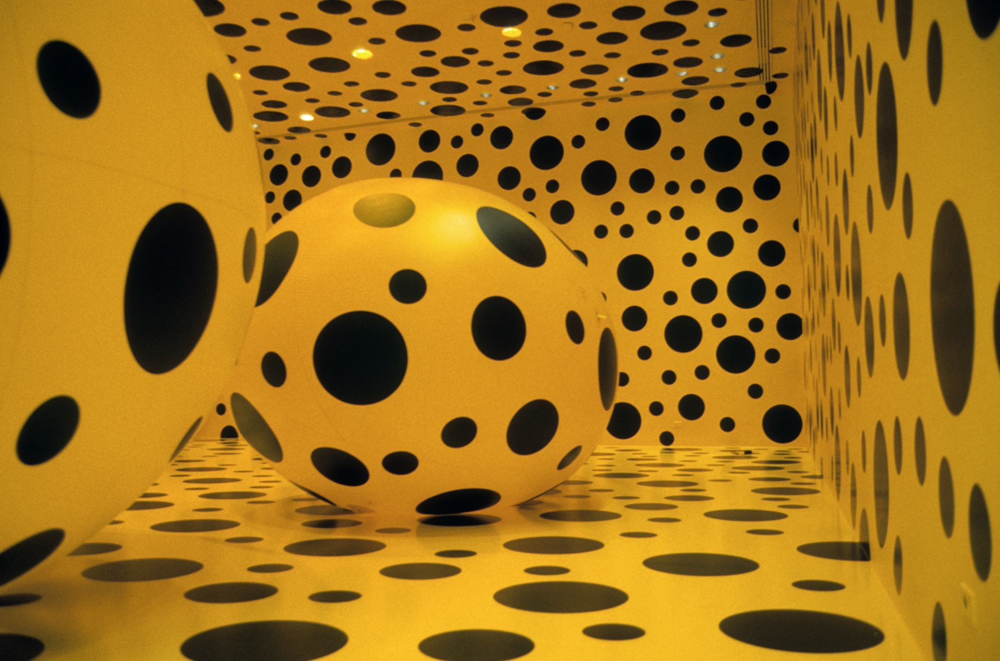
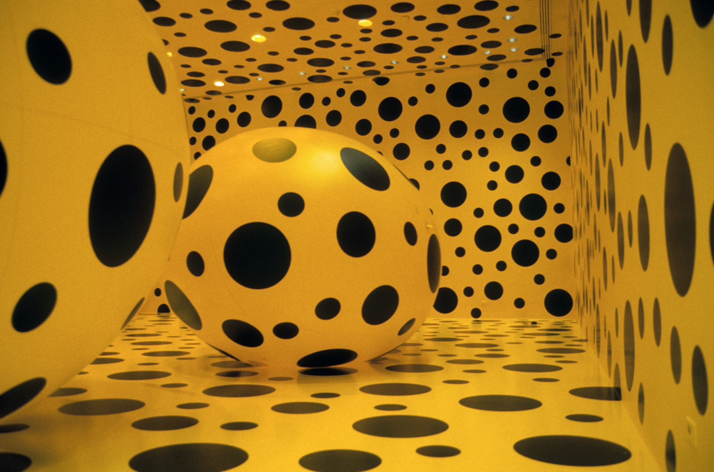
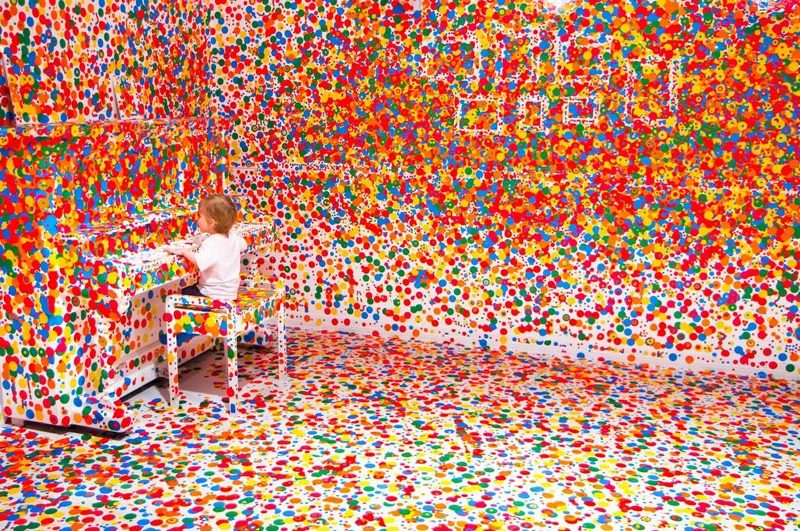
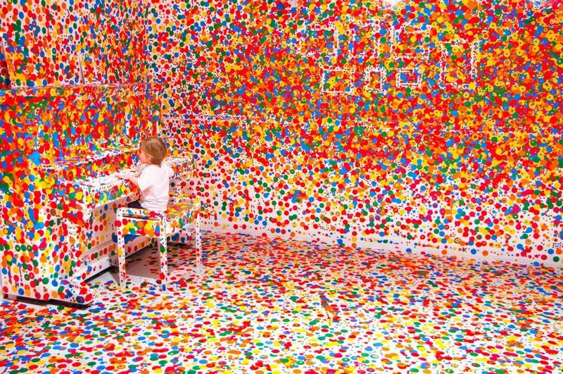

Yayoyi Kusama makes lots of different types of art – paintings, sculptures, performances and installations, but they have one thing in common, DOTS!
Yayoi Kusama tells the story of how when she was a little girl she had a hallucination that freaked her out. She was in a field of flowers when they all started talking to her! The heads of flowers were like dots that went on as far as she could see, and she felt as if she was disappearing or as she calls it ‘self-obliterating’ – into this field of endless dots. This weird experience influenced most of her later work.
By adding all-over marks and dots to her paintings, drawings, objects and clothes she feels as if she is making them (and herself) melt into, and become part of, the bigger universe.
 

 
